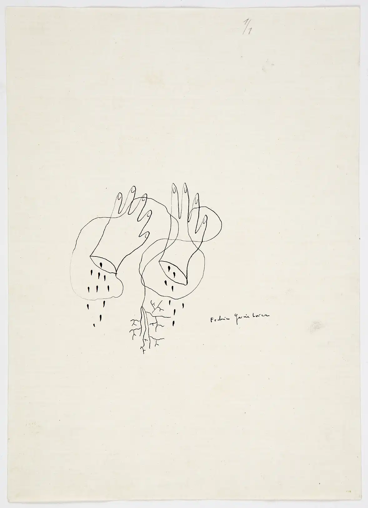

Manos cortadas es un dibujo realizado a partir de un automatismo. Consiste en dejarse llevar y trazar un dibujo sin levantar el lápiz del papel; luego, el artista completa el dibujo que surja.
El resultado del dibujo de Lorca podría identificarse como un poema visual. ¿Qué te transmite?
En 1929, Lorca hizo un viaje a Nueva York que marcó sus poemas más surrealistas. Lee sus versos y escucha la interpretación que hizo de ellos el artista Enrique Morente.

Leonora Carrington (1917-2011)
Artista y escritora anglo-mexicana.
Fue educada en la alta sociedad inglesa y expulsada de varios internados.
Desarrolló un complejo mundo de figuras oníricas y simbólicas.
En los años treinta se introdujo en el círculo surrealista de la mano de su pareja, Max Ernst.
Experimentó varios episodios de gran dureza en su vida que afectaron a su salud mental, llegando a sufrir un ingreso en un hospital mental.
Exiliada en México, se reunió de nuevo con el círculo surrealista y con su amiga Remedios Varo.